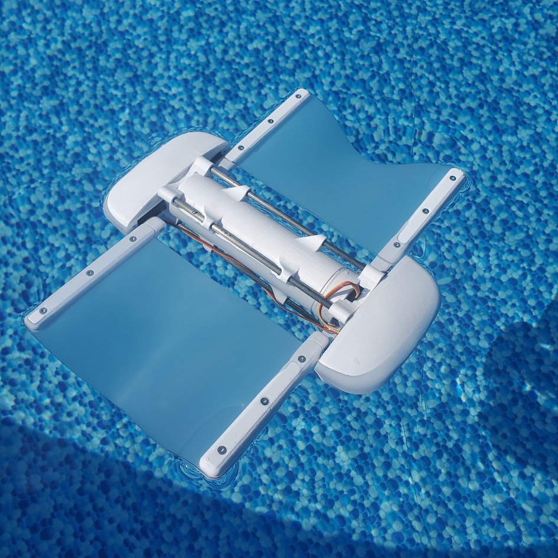
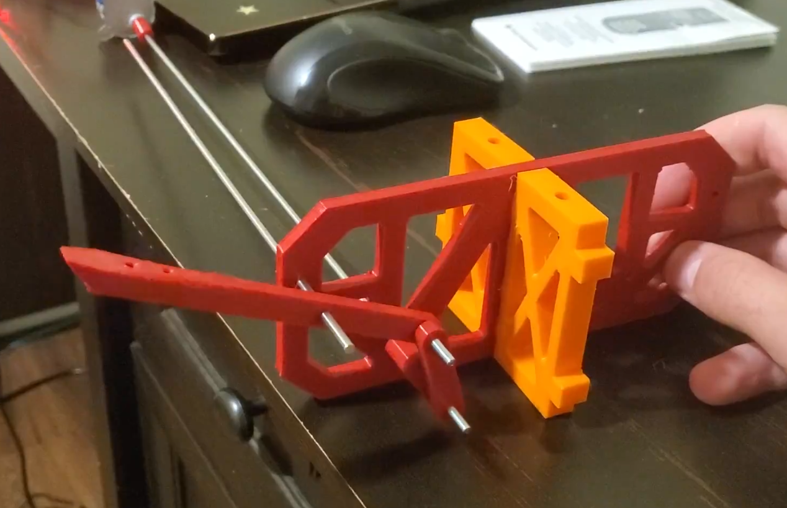
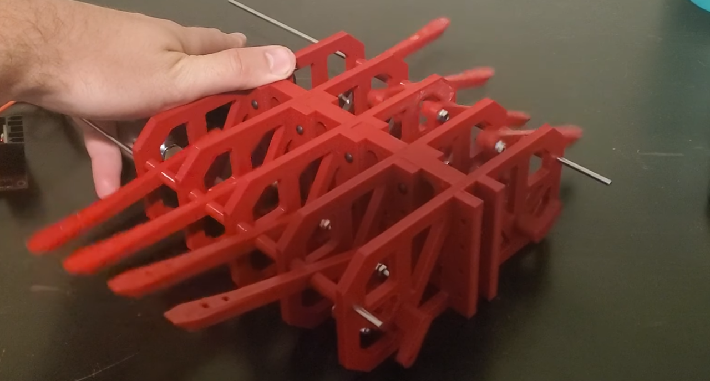
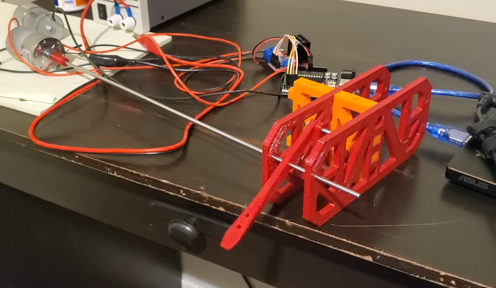
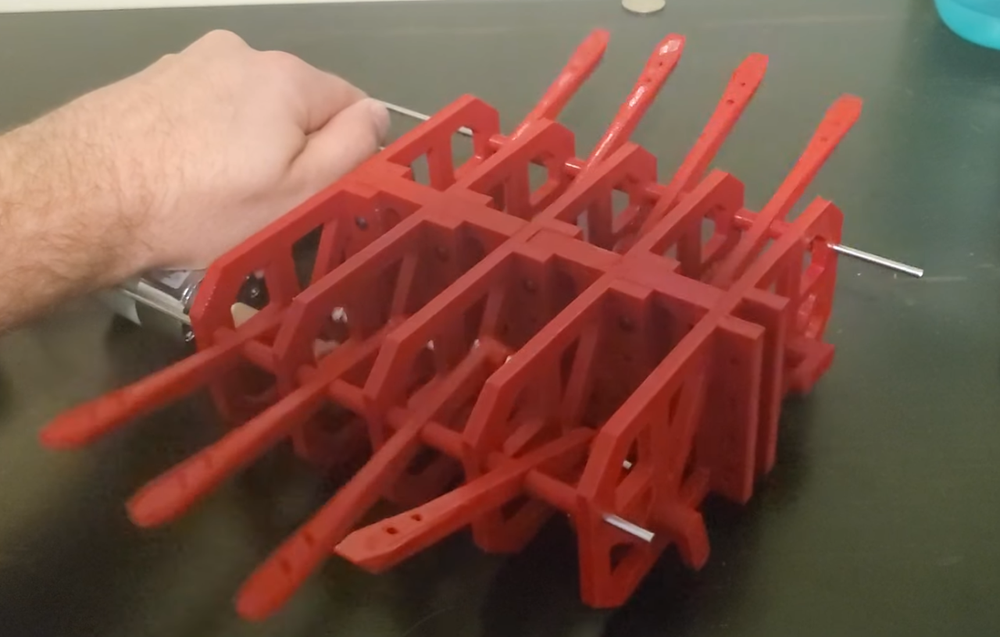
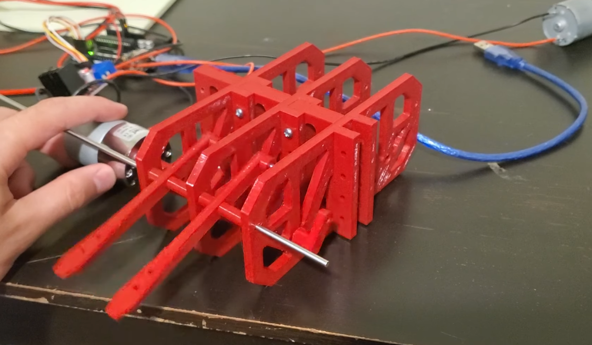

I have made two different versions of this concept, with only one making
it into an underwater environment. This was my first introduction to
making a robot which was difficult and a large learning process. The
first design was modeled in Fusion 360, and I was primarily focused on
using a 4-bar linkage to turn a continuously rotating shaft into an up
and down motion. Once that had been determined, I modeled the
attachments so that everything could be modular. I then printed out the
parts and began testing. It became clear after the fourth arm that there
were a couple issues presenting themselves. Because the parts were so
thin, they did not have enough strength, which caused the metal rod to
bow which caused a lot of jamming and stalling. The second issue was the
lack of bearings in the design: The large amount of friction meant that
a lot of the rotating parts would get stuck on other surfaces and often
shear off.
The second time I worked on a manta ray robot
design I had a lot more experience with 3D modeling, robotics, and
electronics. I decided to limit the number of moving parts by having
only four arms - each of which are attached to a waterproof servo. To
generate the flapping motion, the back servo would stay still, and the
front two servos would rotate back and forth. The internal electronics
are housed in an inner tube with a gasket and threaded cap sealing it
in. This design proved much more feasible, and I am currently working
further on the project.




